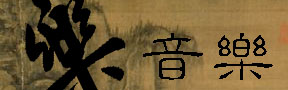
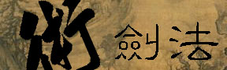
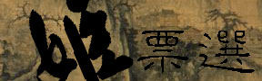
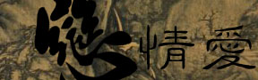
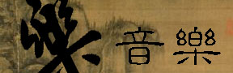
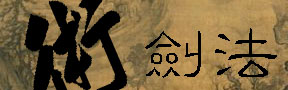
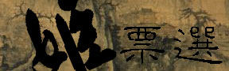
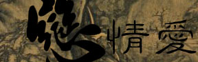

|
|
|  | |
|  |  |
|  |
|
|
|  | |
|  |  |
|  |
序 關於 (最新更新日期:?月?日)(完成度80%)
關於本坊,仙劍奇俠傳等的略要資訊.
角 角色 (最新更新日期:8月4日)(完成度80%)
仙劍奇俠傳的人物略述,包括主角一行四人及其他各個角色的介紹及評價.
景 場景 (最新更新日期:?月?日)(完成度30%)
仙劍奇俠傳的場景,目前收有漁村市場,林家堡兩場景,今後將陸續收錄.
樂 音樂 (最新更新日期:?月?日)(完成度80%)
仙劍奇俠傳原版CD上的八首音樂,以.mid檔呈獻,並收有樂意詞句.
跡 留跡 (最新更新日期:?月?日)(完成度90%)
訪客留言版,歡迎各玩友網友有甚麼要吐的盡量發揮!!
月 如月 (最新更新日期:?月?日)(完成度85%)
仙劍奇俠傳第二女主角-林月如的專區,深入了解月如,另設月如情敵俱樂部,月如寫真館.
話 語詩 (最新更新日期:?月?日)(完成度100%)
收錄仙劍奇俠傳神 仙 情 夢的詞句,插畫.
宇 寰宇 (最新更新日期:?月?日)(完成度97%)
其他網站,包括遊戲,音樂,藝術......
神 召喚 (最新更新日期:?月?日)(完成度95%)
仙劍奇俠傳中的五相神召喚術收錄!!對應靈珠參照.
靈 仙靈 (最新更新日期:?月?日)(完成度30%)
仙劍奇俠傳的第一女主角,趙靈兒的專區,初步建設中.
術 法術 (最新更新日期:?月?日)(完成度95%)
仙劍奇俠傳的法術完全收錄!包括御劍術,五相法術,氣劍指等......
姬 票選 (最新更新日期:?月?日)(完成度100%)
仙劍奇俠傳美少女人氣王票選大會,選出你(妳)心目中的最佳女主角!
痕 留痕 (最新更新日期:?月?日)(完成度99.97%)
仙劍奇俠傳討論區,有問題,卡關,交換心得的最佳場所!!
戀 情愛 (最新更新日期:?月?日)(完成度20%)
仙劍奇俠傳中的愛情故事收錄!!包括主角,彩依,巫王巫后......等.
本坊之圖,文,聲音皆獲大宇資訊之授權.
大宇出品 必屬佳作
必屬佳作
本資料為「大宇資訊有限公司」所提供,僅供瀏覽之用,禁止未經授權之其他任何行為。
(C) 1997 SOFTSTAR INFORMATION Co.,LTD.